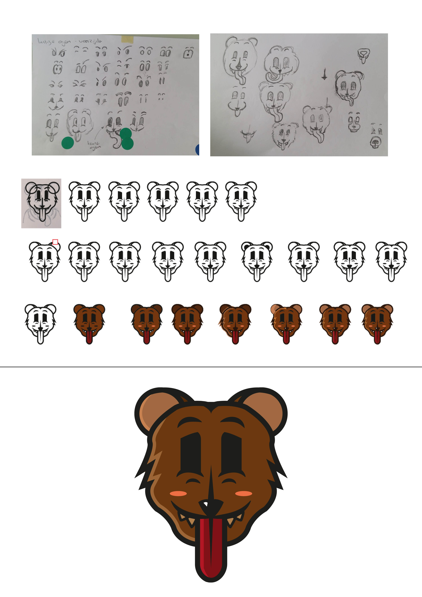

Terug
Voor mijn medestudent Kenneth moest ik een Spirit Animal illustreren op basis van één van zijn persoonlijke eigenschappen en zijn favoriete dier.

Om op de juiste vorm te komen, heb ik zoveel mogelijk variaties en iteraties op papier en digitaal in Illustrator geschetst.